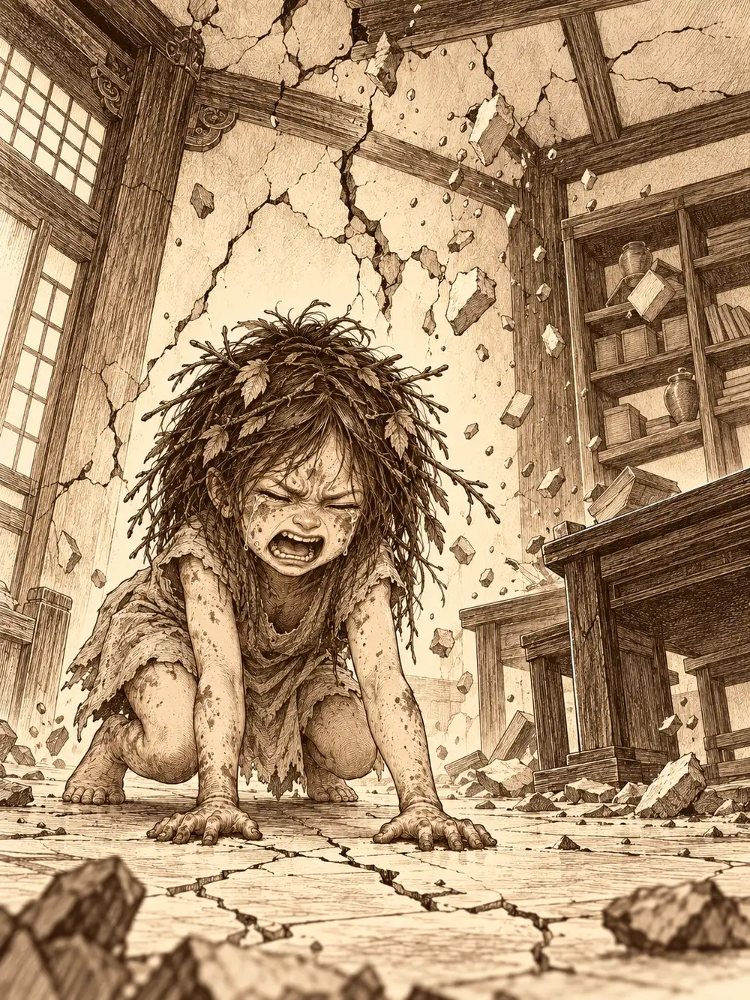

Capítulo 142
De compras
Libro IX · Mareas y muertos
El despacho de la shogun olía a mar y a tinta. Calista había vuelto de Brunami con un cuaderno lleno de cifras: había cerrado relaciones comerciales con el Puerto de las Espadas, había estudiado lo que allí se compraba y, como los aranceles eran altos, había ajustado el precio de los productos de Kuroto para compensarlos. Los muelles de Sho ya lo notaban. Llegaban barcos, gente y mercancías que la isla no veía desde hacía años.
Jin había pasado esos días entre libros de estrategia y el campamento del sur, y le traía informes de Hati y suyos. Ayuko, al recibirlos, le había recordado sin demasiada dulzura que la tarea de convertir a los cazadores en algo que encajara con el ejército era suya y de Banzo, y que los cazadores seguían yendo por libre.
"Si esto sigue creciendo como creo", le dijo Jin a Calista, "puede que en la próxima oleada haya bajas importantes. Los demonios están cada vez más organizados. Y cada vez son más fuertes".
Calista, que hojeaba un libro junto a la estantería, mencionó el bosque de la niebla y la sangre de Otakemaru. Se le ocurría ir a hablar con los guardianes, a ver si había forma de reparar la cúpula o levantarla de nuevo. Por ahora, admitió, solo podían defenderse.
Archi, que había entrado detrás de Jin, se había acercado a Gelbreak, tirado en el sofá, y había empezado a hablar de aquello que tenían pendiente. El drow le tapó la boca con la mano, miró de reojo a Calista, que seguía con Jin, y le susurró que era cosa de los dos. Debían pensarlo bien. El gnomo asintió.
En la habitación de al lado sonaban explosiones. Arwen y Shizuka compartían ahora una cama enorme en palacio y la estaban usando para saltar. Cuando los mayores se encerraron en el despacho, las niñas se miraron. Arwen se convirtió en cucaracha. Shizuka, que también sabía cambiar de forma, en ardilla. Y las dos se colaron por debajo de la puerta.
Calista dio un grito. No soportaba las cucarachas. Archi, sin preguntar, disparó un dardo de fuego contra el bicho, y la cucaracha rodó por el suelo y se convirtió en una niña chamuscada que empezó a berrear. Gelbreak se apartó de un salto. Sabía lo que venía.
Arwen se había tragado una de las esferas, y cuando lloraba, la esfera lloraba con ella. El suelo tembló. Tembló el palacio entero y tembló la capital. Gelbreak y Mei cayeron al suelo, cayeron cascotes de las cornisas y en las paredes del despacho se abrieron grietas. Calista apagaba con un gesto de agua las llamas que el dardo había prendido entre los libros. Shizuka, ya con su forma de siempre, se plantó delante del gnomo y empezó a darle puñetazos en la armadura nueva.
"¿Por qué le pegas? ¿Por qué?".
"¡Me dijeron que era una cucaracha!".
La niña se llevó a su amiga, todavía hipando, y el temblor se fue apagando poco a poco.
Esa tarde salieron de compras. Mei prefirió tomarse el día libre que le ofrecieron. La ciudad estaba más animada de lo que ninguno recordaba: puestos nuevos, idiomas extraños, olor a especias que nadie sabía nombrar. Calista les habló del Puerto de las Espadas, una gran ciudad mercantil donde se cruzaban gentes de mil lugares, junto al muro que la separaba del norte en guerra, con caminos hacia el desierto y rutas hacia muchas islas, gobernada por tres señores que dirigían sus gremios. Allí había hambre de magia, y Kuroto tenía perlas y componentes que vender.
En la tienda de Kashi, el alquimista, ya habían llegado pociones y objetos por la nueva ruta. Calista compró para Gelbreak una joya cargada de magia poderosa. Él, a cambio, le regaló un colgante en forma de corazón, un amuleto de sirena que reforzaba el cuerpo de quien lo llevaba. Calista se quedó mirándolo como si nadie le hubiera regalado nunca nada, y le dio las gracias con un beso. Más tarde le compraría también unos guantes para el juego de manos.
Archi quiso que Calista le financiara las compras. Ella le ofreció quinientas monedas al veinte por ciento; tras mucho regateo lo dejaron en un diez para las tres primeras operaciones. El gnomo, al final, prefirió no firmar nada hasta que necesitara el dinero de verdad, y Calista se guardó el documento.
Jin descubrió la cerveza importada y fue amor a primera vista. Compró un barril por cuatro monedas de oro y Archi se lo encogió para que pudiera llevarlo, advirtiéndole de que al recuperar su tamaño volvería también toda la cerveza. Vendió unas armaduras que no usaba, se llevó el barril al gimnasio, lo escondió bajo unas losas y aprovechó la reapertura de los puertos para adecentar el negocio.
En la tienda de Tsugami, la modista confundió a Archi con un hijo de la pareja y ellos lo negaron a dúo. Calista dejó ropa para arreglar. Archi y Gelbreak desfilaron con los modelos nuevos, y el drow se compró un traje elegante que dejó a Calista sin palabras. Archi encargó el mismo en verde, para distinguirse. Gelbreak dejó muy claro que no pensaba pagárselo.
Luego pasaron por el gimnasio de Jin. Archi apostó un favor a que podía levantar más peso que él y, sin que nadie lo viera, llamó a un pequeño sirviente invisible para que le ayudara con la barra. Ni así terminó las cinco repeticiones. Acordaron un empate, aunque el gnomo ofreció el favor de todos modos. Después vinieron los saltos a la comba, y unas miradas de otros clientes hacia Calista que no le gustaron nada a Gelbreak. El gimnasio se llenó de pronto de una oscuridad total y hubo varios tropiezos antes de que salieran.
Archi quería enseñarle a la shogun su taller. Calista se echó una capucha y se disfrazó de elfa. Por el camino hablaron de dioses. Archi venía de una ciudad que veneraba a una deidad de los artífices. Calista dijo que en su pueblo los más devotos rezaban al dios de las tormentas, y que todos, devotos o no, rendían grandes honores al rey dragón. Al decirlo apartó la mirada. Uno de ellos comentó que el día de la coronación le había parecido ver a un grupo de su tierra, y a Calista se le quebró un poco la voz al contestar que seguramente habían ido por curiosidad.
En los barrios bajos, Calista notó las miradas. No eran para ella, sino para el drow. Gente quieta en los callejones y en los tejados, con una forma de vestir y de esperar que ella conocía: Cuchillas Negras. Se tensó y le fue indicando a Archi dónde estaban. Nadie los siguió ni los atacó.
El taller era un sótano lleno de vapor, engranajes y generadores que zumbaban. Allí Calista conoció a Víctor, el socio de Archi, y a Frank, un perrito mecánico de hocico chato que movía la cola con un chirrido. Cuando comprobó que el inventor era de fiar, se quitó el disfraz. Víctor le enseñó un generador que en veinte minutos producía luz para un par de horas; quizá algún día pudieran iluminar calles con aquello. Calista dio permiso para vender inventos pequeños, siempre que pasaran antes por su filtro, nunca prototipos de armadura ni nada peligroso. También hablaron de las comunicaciones de Guxi: piedras fijas en las bases, en palacio y en el campamento, unidas por un núcleo. Nada de una piedra para cada cazador. Las que habían traído de Brunami servirían para ampliar la señal.
Antes de irse, Archi le enseñó a Calista un anillo. Era de Cuchillas Negras. Admitió que tenía tratos con la cofradía y le propuso hacer de intermediario: él le llevaría a Tiari la información que la shogun escogiera, para orientar su atención hacia donde conviniera.
"Te la daré yo personalmente", dijo Calista. "Mezcla verdades y mentiras. Y no le digas cuál es cuál".
Ninguno de los dos olvidaba que Tiari tenía muchos más informantes y que comprobaría lo que le llegara.
De regreso, Archi se metió en un callejón y encontró en el suelo un fragmento de gema y, un poco más allá, un escudo que no parecía hecho para ella. El escudo zumbaba con varios elementos: podía devolver un golpe en forma de descarga y cambiar a voluntad el elemento de los puños de su armadura. El gnomo metió la gema en un frasco, se colgó el escudo y miró a los tejados con recelo. Nadie le explicó quién los había dejado allí.
En la puerta de palacio, Calista se despidió de Gelbreak con un beso, le dio las gracias otra vez por el colgante y volvió a ponerse la máscara de shogun. Entonces llegó Mei corriendo.
"Señora, señora, están aquí".
Y una voz dijo desde el salón:
"Señorita Calista Nautireida. Venimos a verla".

A Calista se le levantaron las aletas y se le abrieron los ojos. Le hizo un gesto a Mei para que se apartara y fue hacia el centro de la sala. Allí esperaban tritones con armadura y tridentes, y otros con menos hierro pero con varas de concha que olían a magia antigua. En medio, una mujer tritón cubierta por completo con un velo. Jin se llevó la mano a la empuñadura. Gelbreak ya había sacado medio estoque, cuya hoja ahora brillaba como si la hubieran bañado en plata. Archi le cogió la mano y lo obligó a envainar.
"Mantengamos la discreción".
La mujer tendió la mano.
"Calista, creo que tenemos que hablar en un lugar privado".
Calista apretó los labios hasta dejarlos en una línea fina. Los que la conocían notaron que no estaba tranquila.
"Si queréis un lugar privado, lo dispondremos. Podemos ir a mi despacho".
Gelbreak dio un paso para ponerse a su lado. La mujer levantó la mano.
"Guardián Gelbreak, esta vez te quedarás fuera. Son asuntos que tú no puedes permitirte escuchar".
Calista lo miró un segundo con una cara que decía lo siento y esto es grave a la vez, y subió la escalera detrás de la mujer velada. Los soldados tritones no adoptaron postura de ataque, pero con la mirada pedían a los cazadores que se apartaran. Eran soldados de verdad, y a su lado los del shogunato parecían aprendices.
Cuando la comitiva se fue, Calista mandó llamar a Banzo y a Jin. En el despacho, con Gelbreak a su espalda, les contó que la mujer era una Perla, una enviada directa del rey dragón al que servía su pueblo. Habían venido a ofrecer soldados: sabían que con cada oleada Kuroto perdía más hombres. Y ella había aceptado.
"Este favor me costará caro".
Se abrazó a sí misma. Les habló de un dragón de muchos años, más grande que todo Sho, que tenía el hielo de su lado; de lo que se sentía cuando las venas se congelan y te obligan a moverte, rompiendo el hielo por dentro. Por eso había huido. Por eso no quería volver al mar. Los dragones eran codiciosos, y algo reclamaría cuando acabara la guerra. La veían pequeña, asustada, y no se parecía en nada a la Calista de siempre.
"Os necesito, cazadores. Más que nunca".
Banzo golpeó el suelo con el mango del arma. Dijo que no lo permitiría, que iría él solo a hablar con ese dragón si hacía falta. Cuando supo que ya había aceptado, protestó, y luego se arrodilló y prometió defender su libertad. Jin le recordó que Kuroto les había dado algo por lo que luchar y le ofreció su ayuda.
Calista salió un momento a petición de Gelbreak. El drow miró a los otros dos y enseñó los dientes. El ejército del shogunato no tenía ninguna oportunidad, lo sabían. Necesitaban uno mejor, y los tritones lo tenían. Les propuso usarlos contra Otakemaru y, cuando llegara el momento, actuar con los cazadores contra el dragón. Calista no debía saberlo: temía que su señor pudiera descubrirlo a través de sus súbditos. Banzo le pidió a Jin que lo cubriera unas semanas, porque quería retirarse a entrenar al norte de Hakara. Cuando Calista volvió, les explicó cómo luchaban los tritones: ataques rápidos, retirada, hojas untadas con veneno de peces. Y les advirtió de su orgullo. Sus duelos de honor, dijo, solo terminaban con una muerte.
Banzo pidió a Gelbreak que practicara con él al estilo de los tritones. El drow atacó con el estoque, fintó, se envolvió en oscuridad. El goliat se sentó a meditar en mitad del combate, siguió con la mente el patrón de su carrera y salió a interceptarlo. Antes de alcanzarlo se quedó inmóvil, con las pupilas verdes. Gelbreak desvió el estoque en el último instante para no atravesarle un ojo. Banzo no se inmutó. Lo agarró del cuello, lo levantó en vilo y alzó el arma para cortarle la cabeza, con la cara vacía, sin expresión.
A mitad del tajo el verde se le apagó un poco en los ojos. La hoja entró en la carne como en mantequilla y una mano cayó al suelo con un ruido sordo. Era la mano de Banzo, la que sujetaba el cuello de su amigo. El goliat se miró el muñón, miró a Gelbreak, le sonrió y se desplomó de espaldas. Estáis donde os merecéis, muertos. Yo escojo mi propia familia. Gelbreak tiró el estoque y corrió a sostenerlo, pero ya había perdido el conocimiento.
Banzo despertó en una habitación de invitados de palacio y apartó el arma de su vista. En su tribu, un guerrero mutilado no valía nada. A solas con Gelbreak le contó que había vuelto a su aldea cuando había perdido el contacto con sus ancestros, y que al unirse a los espíritus caídos había absorbido su dolor. Le exigían que matara a su asesino. Gelbreak le respondió que volvería a hacer lo mismo, porque habían sido ellos o él, y que si Banzo alguna vez dañaba a Calista, sería otra cosa. Cuando entró Calista, Banzo escondió el muñón y se negó a que le devolvieran la mano: si volvía a perder el control, la próxima vez podía costarle la vida al drow. Calista le propuso desviar el odio de los espíritus hacia alguien cercano a Gelbreak que estuviera fuera de su alcance. Gelbreak le dejó una daga y le habló de tres caminos que no explicó. Le insistieron en que pidiera ayuda, y se fueron.
Por la ventana entró un gorrión que se convirtió en Arwen. Banzo escondió el brazo, se la subió a hombros y entró en el cuarto de Shizuka haciendo de monstruo de las cosquillas, con Arwen de zombi. En el revuelo, Shizuka resbaló por el brazo sin mano y cayó al suelo. Banzo lo disimuló diciendo que le estaba creciendo pelo. Más tarde, sin pensar, le tendió ese brazo, y la niña lo vio. No se apartó. Le tocó el muñón y lo abrazó. Arwen se acercó a preguntar si dolía. El goliat las sostuvo a las dos y lloró. Shizuka le dijo que seguía siendo grande y bueno, y empezó a imaginarle garfios, espadas y ganchos que podían ocupar el sitio de la mano, y Banzo se echó a reír viendo posibilidades que no había visto. Les propuso ir al lago a que le enseñaran sus trucos.
En la base de Sho, Guxi y Archi subieron a la torre los grandes cristales de cuarzo rosa que el gnomo había traído en una carreta y soldaron las conexiones. Pocos días después, el cristal de Guxi habló con la voz de Archi entre crujidos, y cuando Guxi arregló un cable descubrió que la línea había estado abierta todo el rato mientras Koishi y el gnomo quedaban para una noche de caos. Sho y Ukio ya se oían con claridad. Guxi fue a contárselo a Calista, que le señaló dónde quería la piedra de palacio y le pidió otra cosa: desde que se habían abierto las fronteras habían detenido a mercenarios de un señor del Puerto de las Espadas sacando información. Necesitaba algo para revisar barcos, marineros y mercancías, y que Serafina enseñara a sus soldados a reconocer los engaños de los piratas. Guxi prometió adaptar un borrador para ver el interior de los objetos.
Serafina había ido a buscar a Guxi y se encontró a Archi. Le pidió perdón por haberle golpeado en Ukio, y él le tendió la mano: había sido la magia oscura, no ella. Esa noche fueron juntos al club Pétalos, Guxi los siguió convertido en murciélago y Koishi apareció tirando de un mímico atado con una cuerda. Bailaron hasta que el local entero bailó con ellos.
Unos días más tarde, Serafina se coló invisible en el cuartel donde Danifae seguía presa, le robó la llave a un guardia dormido y bajó a las celdas. La drow colgaba de las cadenas con la mordaza puesta. Fueron las arañas del suelo las que contestaron, formando palabras como hormigas. Serafina le habló del esqueleto y de su culpa. Danifae no le ofreció compasión.
Yo apuñalé a Calista. Yo intenté matar a esa niña salvaje. Les advertí que haría cualquier cosa por las esferas. ¿No te lo ha contado tu prometido?
Le habló de las esferas como de su destino y su libertad, le advirtió que tocarlas podía matarla y le dijo que todos eran esclavos, solo que algunos no veían sus cadenas. Serafina salió de allí pensativa, prometiendo hablar con Guxi, y dejó una botella junto a la celda. Cuando se fue, la única araña que quedaba sobre su brazo, vencedora de la pelea entre todas las demás, se transformó en la emisaria de barro de Lolth, que olió la botella e hizo una mueca de asco.
"Qué poca calidad".